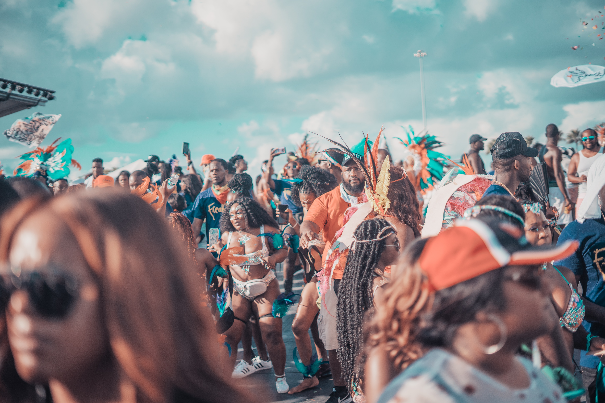

October 15 2019 by Jon
The definition of identity is who you are, the way you think about yourself, the way you are viewed by the world and the characteristics that define you. The Caribbean's diaspora has given an idea of what the Caribbean is and how it became the way we know it as today.
To begin with, an easily identifiable aspect in Caribbean identity formed from Diasporic Communities are the festivals that they host. Caribbean citizens form a Diasporic community from their migration to other parts of the world (mainly in North America and the UK). People from the Caribbean were under heavy racism, given poor living conditions, suffering from unemployment or low wages and there was general depression. They used festivals to express and free themselves. Nowadays, these festivities are seen and recognized as Caribbean events. Caribbean nationals look beyond their background and come together and cooperate with each other to host these festivals. Members of these metropolitan countries see them as one which greatly influences the formation of a Caribbean identity. The barriers between Caribbean countries are lowered and many begin to recognize each other as one people.
Secondly, another identifiable aspect of the Caribbean identity formed from Diasporic Communities is the music that is made from them. As stated earlier, many immigrants that came to these larger countries experienced a wide scale of racism. They sought after a way in which to express themselves, to fight back against the powers that subtly subjected them to a sort of enshacklement that prevented them from pursuing goals. Hence their own “sound” was created, where any kind of person could make a song that expresses the struggles of people of colour, immigrants and matters of the government. This kind of expression through music can be seen a lot in current music made in the Caribbean where current artists express the struggles living in the streets.
Lastly, another way in which the Caribbean diaspora influences the formation of Caribbean identity is through language. During the time of slavery, the slaves from Western and Central Africa were exposed to the different languages spoken by their European capturers. This led to the eventual creation of the many diverse and unique forms of Creole that are spoken throughout the Caribbean today When Caribbean citizens who are part of the diaspora use their native language in their new environment, this helps to form the Caribbean identity. The native inhabitants of that new environment would hear their accent, and then would be intrigued into inquiring about their origins, which would lead to Caribbean identity being formed.
In conclusion, Caribbean diasporic communities can influence the formation of Caribbean identity in a number of ways. They are: Through the hosting of festivals; Production of music that expresses how they felt about mental restrictions placed upon them; The making of unique foods which were inspired by the Indigenous peoples of the Caribbean and European settlers; And finally through language where people who are not of Caribbean origin are exposed to the unique accents that the diasporic communities possess.